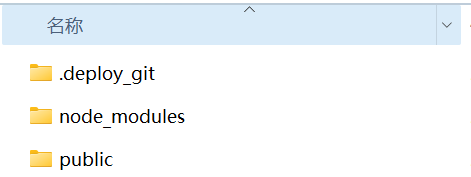

hexo重装系统后如何恢复
一、恢复基础环境
重装系统后首先要安装git和nodejs，这个就不详细描述了，网上一搜一大堆。
安装好后查看是否安装成功。
git --version #查看git版本
node -v #查看node版本
npm -v #查看npm版本 ，一般安装nodejs 时就一块安装了。
都显示出版本后就说明基础环境已经安装好。
二、 设置Git
1.设置个人信息
git config --global user.name "用户名"
git config --global user.email "邮箱"
2.配置SSH key
右键 点击 Git bash here 输入
ssh-keygen -t rsa -C "邮件地址"
生成的key在“C:\Users\用户\用户名.ssh”路径下，找到“id_rsa.pub”文件，右键—打开方式—记事本，打开后全选复制里面的内容
登录“github”，右上角用户图标，找到“Settings”，点击后找到“SSH and GPG keys” ，再点击“New SSH key”
将复制的key粘贴进去，title随便写一个，点击 add ssh key。
然后测试连接，看能不能连接成功
ssh -T git@github.com #如果返回信息中出现successfully 字样说明连接成功
3.初始化仓库
git init
三、hexo安装部署
安装之前将以下文件删除。

.deploy_git 这个文件夹是部署时生成的
mode_modules 这里面是依赖包
public 这里是生成静态文件
然后开始安装hexo
npm install -g hexo-cli #安装hexo
npm install # 安装依赖
npm instal hexo-deployer-git --save #安装一键部署插件
之后就可以生成静态网页，测试了。
hexo g && hexo s
注： hexo g 是 hexo generate 的缩写，用于生成静态网页
hexo s 是 hexo server 的缩写，启动本地服务，用于预览主题
测试没问题后就可以部署到远程仓库了
hexo d #hexo d 是 hexo deploy 的缩写，用于网页配置部署到git仓库